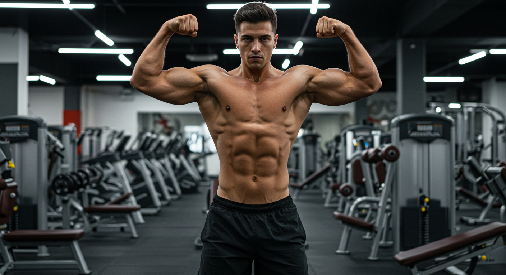
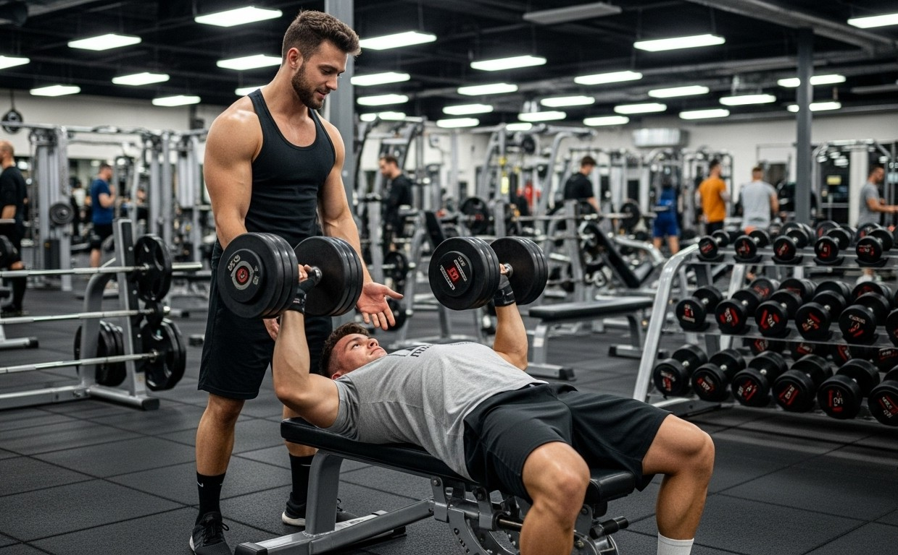

Tren Superior
Aqui encontras todo tipo de ejercicios de tren superior
Espalda, Pecho, Hombros, Biceps y triceps.
Tren Inferior
Aqui encontraras todo tipo de ejercicios de tren inferior
Cuadriceps, Femorales, Gluteo, Aductores, Pantorilla.

Informacion de Rutinas
Aqui podras conocer como deberia ir estructurada una rutina, y tipos de rutinas mas conocidas.
Informacion de Entrenamiento
Aqui podras aprender sobre conceptos del entrenamiento, lo mas importante para avanzar.